ワットノーンパナオ/ノーンカイ
WatNoenPhanao/ NongKhai
ラオスとの国境の町、ノーンカイの町外れで私は途方にくれていた。
きっかけは訪泰前に偶然見つけたこの画像である。
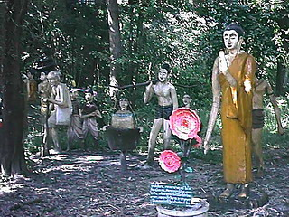 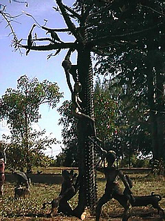
色々とリサーチしたのだが結局ノーンカイのどこかにある、という事以外は寺の名前も所在も判らないままタイ入りしたのであった。
今までもこういった場合、その辺のトゥクトゥクの運ちゃんに聞けば「ああ、知ってるよ」と連れてってもらえていたので今回もまあ、行けば何とかなるだろう、てな感じで。
ところが前日、ウドンターニーの観光案内所で聞いてみたら「ああ、これはワットノーンパナオです」との答えが返ってきたのだ。
さすが観光案内所、恐れ入りました。決して有名ではない隣の県の寺まで熟知しているとは。
で、地図をもらい、行き方を教わり、寺のタイ語表記まで書いてもらい、ついでにノーンカイのお勧め料理店まで教えてもらった。
ありがとう。案内所。
てな訳でワットノーンパナオに到着。
境内に入るといきなり豚さんがお出迎え。
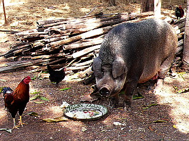
寺の脇にはなぜかベトナム人の墓地が。火葬場まである。
この地にベトナム人がどれくらいいるのかは知らないがこの墓地の規模を見る限りでは相当数の人達がいるのだろう。
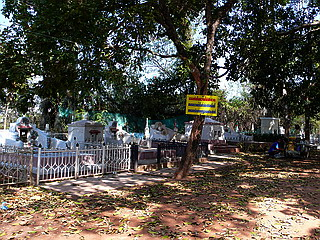 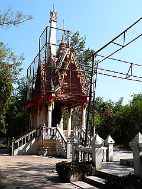
見た目沖縄や華南の亀甲墓みたいだが、墓の機能としては大きく異なる。
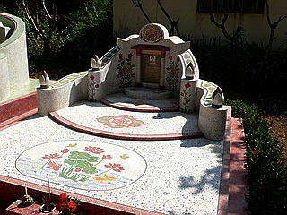
以前ベトナムで見た墓は非火葬墓、つまり棺をそのまま納める形式の墓だったが、ここのは納棺式の墓ではない。
なんたって火葬場が隣にあるんですから。
花をあしらったデザインはいかにもベトナムっぽい。
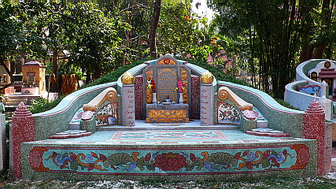
本堂。地方のマイナー寺院の割には立派な装飾だと思う。
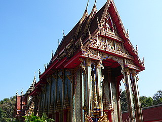 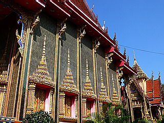
で、いよいよ屋外のコンクリ仏コーナー。
お釈迦サマが皆さんを囲んで仏教の授業中。
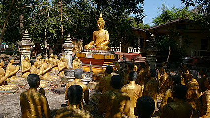
こちらは赤点を採った補修組？
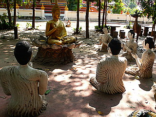
かゆいところはございませんか〜。
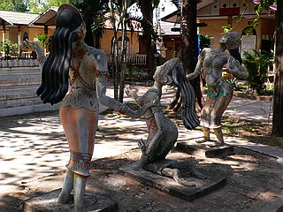
菩提樹の周りには大小さまざまな仏像が並んでいる。
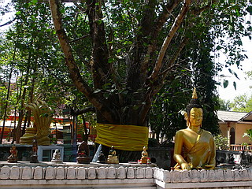
で、その根元。
こちらには壊れたり要らなくなった仏像が置かれている。
どこの国でも使用済みの神仏が積まれている姿は同じようなテイストを醸し出しているなあ。
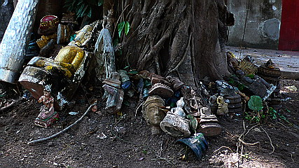
さて。
冒頭に掲げた肝心の地獄だが…
ありませんでした。
寺の境内は勿論、ノーンカイの街中などあちこちで聞いたのだが結局わからずじまい。
案内所のスタッフのあの自信に満ちた回答は何だったんだ〜
という訳で散々期待を持たせてしまった割りにスカであったことをここにお詫びする次第。
しかしあえて掲載した理由はただひとつ。
どなたか冒頭の画像のお寺がどこにあるか知りませんか？
という事を聞きたかったんです。
ご存知の方、メール、ミー。
次の珍寺へGO！
泰国珍寺修行 北へ
珍寺大道場 HOME